Documentación del Proceso de Resolución & Prompts
Registro detallado paso a paso del flujo de trabajo, prompts aplicados e IAs utilizadas para construir de forma interactiva la aplicación web Soft Tomato Pomodoro.
Versión 1.0: Estructura Base y Diseño de Interfaz (HTML/CSS)
IA: Stitch / GeminiEn la primera fase, se planteó a la IA la creación del prototipo visual estático. El objetivo principal fue evitar las interfaces oscuras genéricas y apostar por un diseño elegante basado en el concepto "Soft Tomato" con tonos crema, rojo coral y esquinas redondeadas.
"Necesito diseñar la interfaz gráfica para una aplicación web de Pomodoro utilizando un lienzo responsivo. Quiero evitar los típicos diseños oscuros y planos que genera la IA por defecto. Crea una estética clara, limpia y moderna basada en un concepto 'soft tomato' (fondos en colores crema o blanco suave, bordes suavizados con CSS3 y pequeños acentos en rojo coral). La pantalla debe estructurarse con un contenedor central que incluya: 1. Un encabezado limpio con el título del proyecto. 2. Un selector de tres botones en la parte superior para los estados: 'Pomodoro', 'Short Break' y 'Long Break'. 3. Un display central con el temporizador en números grandes y legibles marcando '25:00'. 4. Dos botones de control inferiores separados para las acciones de 'Start' y 'Reset'. Integra iconos vectoriales limpios (estilo Font Awesome 5/6) para complementar los botones de control y el encabezado. De momento solo requiero la distribución visual estática en mobile y desktop."
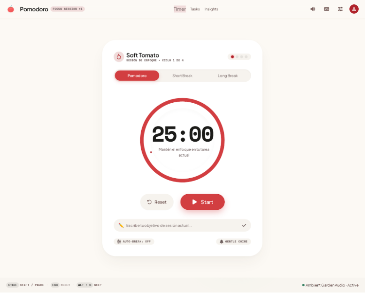
Versión 2.0: Los Estados de Descanso (Short & Long Break)
IA: Stitch / GeminiUna vez validado el diseño inicial, solicité ajustar las vistas previas de los descansos para asegurar que los cambios entre estados ('Short Break' a 05:00 y 'Long Break' a 15:00) mantuvieran coherencia visual y de color.
"El diseño base es perfecto. Ahora necesito configurar los estados interactivos en el prototipo. Haz que al pulsar en las pestañas superiores de 'Short Break' y 'Long Break', el display central cambie el temporizador de forma coherente a '05:00' y '15:00' respectivamente, marcando visualmente cuál es la pestaña activa."
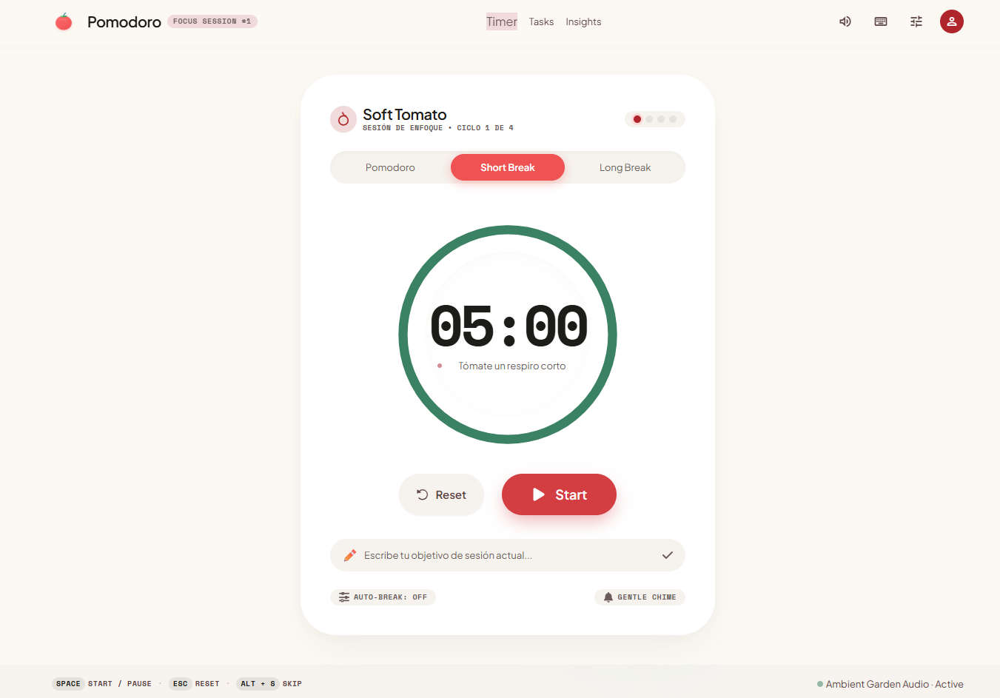
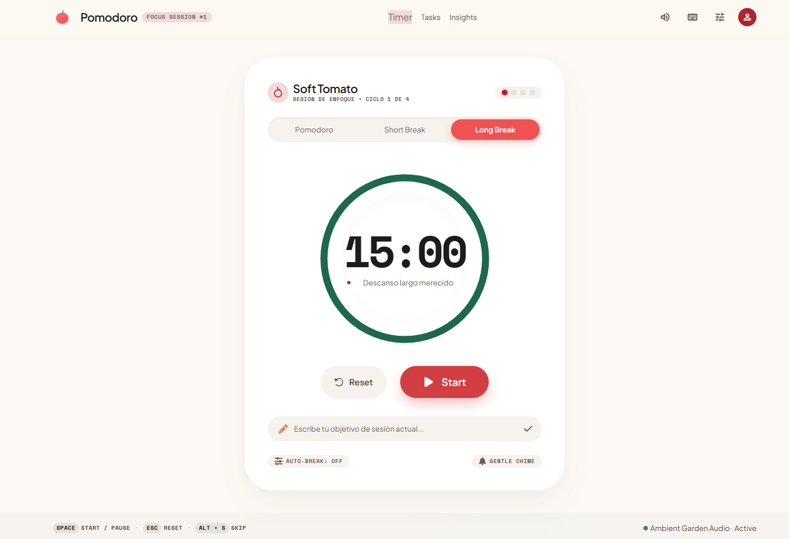
Versión 3.0: Lógica de Tiempo Real con JavaScript Nativo
IA: Stitch / GeminiSe procedió a implementar el comportamiento dinámico. Le pedí a la IA escribir el script en JavaScript vanilla para gestionar el conteo regresivo en tiempo real, alternar los estados del botón (Start / Pause) y restablecer el temporizador mediante el botón Reset.
"La interfaz visual está perfecta, pero ahora necesito implementar la lógica de programación real para que el temporizador funcione de verdad. Por favor, añade código JavaScript nativo (en la etiqueta al final) para activar los componentes: 1. Cuenta atrás real: Al pulsar el botón 'Start', el temporizador debe empezar a descender segundo a segundo en tiempo real (MM:SS). 2. Alternancia de botones: Al estar en marcha, el botón 'Start' debe transformarse en un botón de 'Pause'. Si se pulsa 'Pause', el tiempo debe detenerse por completo y el botón debe volver a decir 'Start'. 3. Botón de Reset: Al pulsar 'Reset', el temporizador debe detenerse y volver al tiempo inicial del modo seleccionado (25:00, 05:00 o 15:00). 4. Control de Ciclos: Al hacer clic en las pestañas superiores ('Pomodoro', 'Short Break', 'Long Break'), el temporizador debe actualizar su tiempo base correspondiente. Asegúrate de que todas las funciones queden totalmente operativas dentro del código final para poder usar la app en tiempo real."
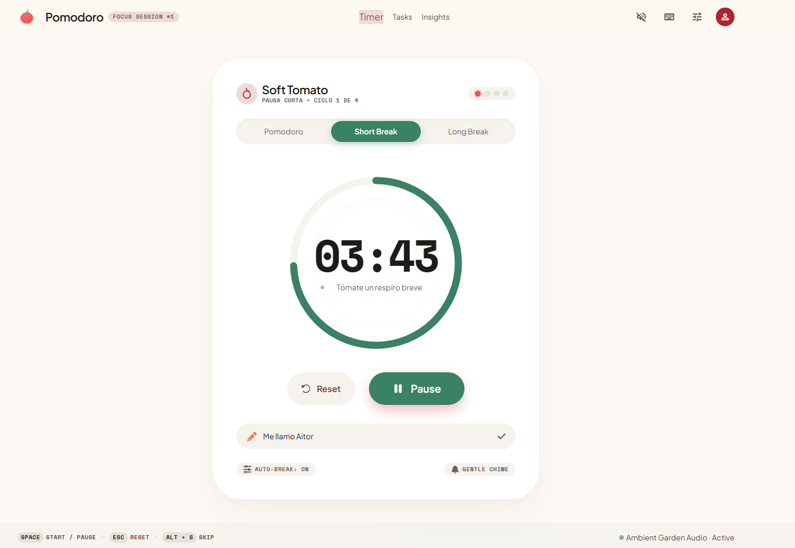
Versión 4.0: Sonido de Alarma y Avisos Finales
IA: Stitch / GeminiPara ofrecer un feedback completo al usuario al finalizar una sesión de 25 minutos o de descanso, pedí integrar la Audio API del navegador web para sintetizar un tono de campana sin depender de archivos de audio externos.
"Para finalizar el desarrollo de la aplicación por completo, necesito añadir el sistema de alertas sonoras. Modifica el código JavaScript para que, en el instante exacto en el que la cuenta atrás llegue a 00:00 (ya sea en modo Pomodoro o en los descansos), se reproduzca un sonido de campana o alarma suave utilizando la API de audio del navegador (Audio API con un archivo de sonido integrado o un tono sintetizado limpio). Además, haz que salte un pequeño aviso visual sutil en pantalla que indique que la sesión ha terminado, invitando al usuario a cambiar al siguiente modo. Con esto la aplicación quedará 100% terminada y funcional."
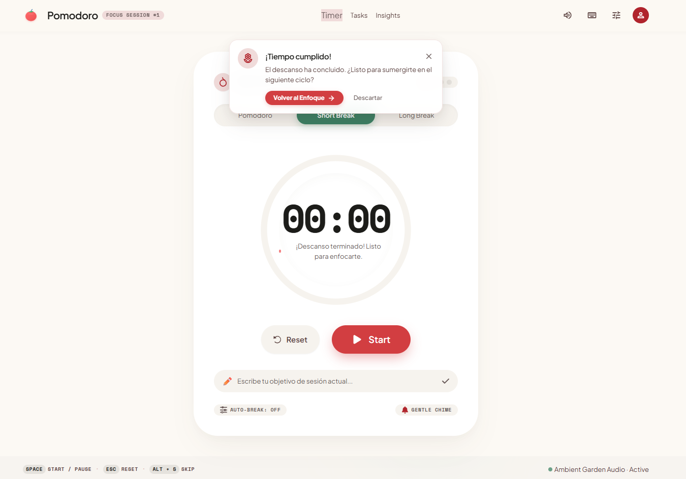
Versión 5.0: Fondo Estético y Mensajes Motivacionales
IA: Stitch / GeminiRealicé una actualización estética y funcional aplicando un fondo de estudio relajante (*cozy desk*), frases motivacionales dinámicas y efectos de cristal (*glassmorphism*), incorporando además un logotipo visual real.
"Quiero realizar una actualización estética y funcional sobre la aplicación actual sin alterar la lógica de programación del temporizador ni el sistema de alertas que ya funcionan. Añade las siguientes mejoras: 1. Fondo de pantalla (Background): Sustituye el fondo plano por una imagen suave, limpia y de alta calidad (estilo cozy desk, aesthetic study o una ilustración minimalista de tomates/estudio) con un filtro sutil encima para asegurar que los contenedores centrales sigan teniendo una legibilidad perfecta. 2. Mensajes Motivacionales Dinámicos: Incorpora un pequeño contenedor de texto debajo del bloque principal que muestre frases motivacionales cortas de forma aleatoria (por ejemplo: '¡Tú puedes con este ciclo!', 'Mantén el enfoque, Aitor', 'Un paso más cerca de tus metas'). 3. Efecto de cristal (Glassmorphism): Aplica a las tarjetas y contenedores principales un efecto de fondo semitransparente con desenfoque suave (backdrop-filter: blur) usando CSS3 para que se integren de forma moderna con la nueva imagen de fondo. 4. En lugar del texto plano de la esquina superior izquierda ('Soft Tomato Logo'), introduce un logotipo visual real. Por favor, asegúrate de mantener intacta toda la lógica del JavaScript anterior."
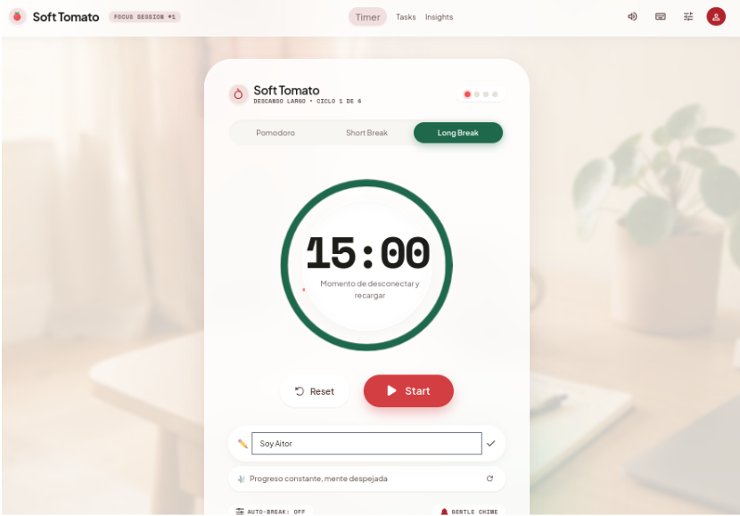
Versión 6.0: Rediseño Visual, Tareas e Insights
IA: Stitch / GeminiSe añadió el tallo superior vectorial (*tomato stem*), el gestor completo de tareas desplegable, las estadísticas en tiempo real y el sintetizador de ruido blanco ambiental para sesiones de estudio.
"Necesito realizar una actualización funcional y estética sobre la aplicación Pomodoro 'Soft Tomato' sin romper la lógica del temporizador ni los sonidos de alerta que ya funcionan. Por favor, añade los siguientes cambios manteniendo una estética clara, limpia y fluida (efecto glassmorphism y tonos blanco/rojo coral): 1. Anillo Visual 'Tomato Stem': Añade un detalle vectorial sutil (el tallo/corona de un tomate en SVG) en la parte superior del círculo del temporizador para reforzar la identidad de marca 'Soft Tomato' 2. Rediseño del Input de Objetivo y Gestor de Tareas: Elimina el contenedor rectangular plano y reemplázalo por un selector de tarea activa desplegable con estética de tarjeta suave. Añade un panel desplegable de 'Tasks' (Gestor de tareas) donde el usuario pueda escribir nuevas tareas, marcarlas como completadas y seleccionar cuál es la activa para el temporizador. 3. Frases Motivacionales con Auto-Rotate: Haz que el bloque inferior de mensajes motivacionales rote automáticamente cada 12 segundos con una transición suave (fade-in / fade-out) además de permitir cambiar al hacer clic. 4. Pestaña 'Insights' Funcional: En la barra superior, haz que la pestaña 'Insights' abra una tarjeta desplegable con estadísticas en tiempo real: minutos enfocados hoy, pomodoros completados y racha de días. 5. Audio Ambiental (Soundscape): Añade un pequeño botón toggle de sonido en la cabecera para activar/desactivar un ruido blanco sutil sintetizado con la Web Audio API. Asegúrate de que la pantalla no se sienta saturada y conserve el diseño 'single-page' limpio."
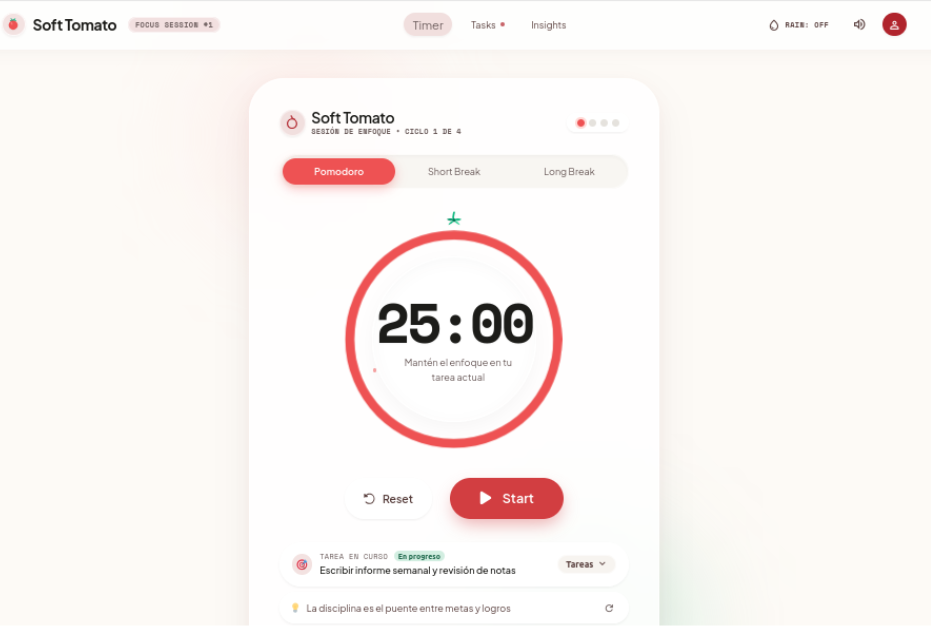
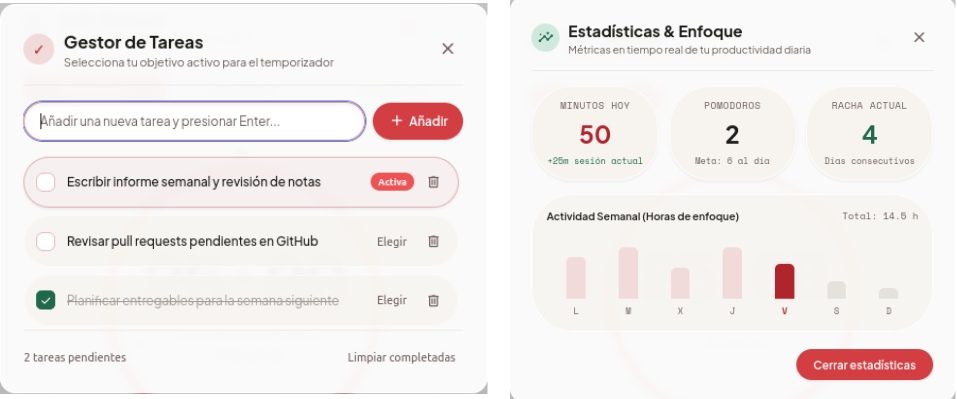
Versión 7.0: Resumen Semanal y Descarga de Informe
IA: Stitch / GeminiVersión que incorpora el desglose semanal de productividad de lunes a domingo y la funcionalidad de exportación automática de reportes en formato CSV, traduciendo los textos restantes al español y recolocando la imagen de fondo.
"Quiero actualizar la aplicación Pomodoro 'Soft Tomato' a su Versión 7.0 final. Asegúrate de no romper NADA de la Versión 6.0. Añades: 1. Pestaña 'Insights' con Resumen Semanal: En la vista de 'Insights', añade una tabla/tarjeta limpia que muestre el desglose semanal (de Lunes a Domingo) con los días, las horas dedicadas y el objetivo/asignatura trabajado. 2. Exportación de Informe (Descarga): Añade en esa misma vista de 'Insights' un botón funcional llamado 'Descargar Resumen' que al hacer clic descargue automáticamente un archivo CSV con el registro de la semana para el usuario. 3. Traduce los textos que están en inglés a español. 4. Vuelve a colocar la imagen de fondo. Asegúrate de mantener el diseño limpio de una sola pantalla ('single-page') y la estética 'Soft Tomato' con bordes redondeados y efecto cristal."
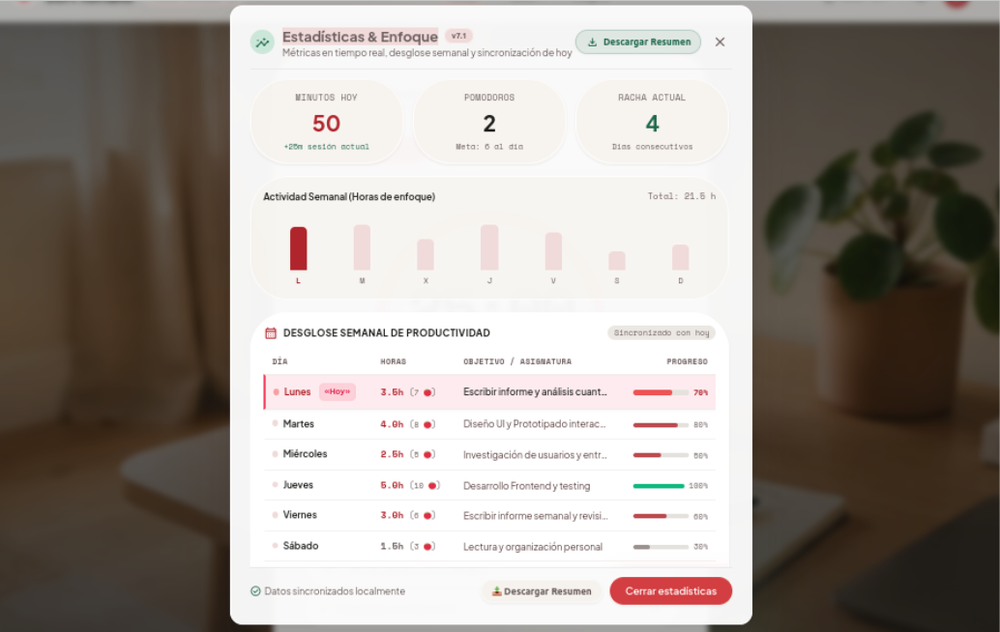
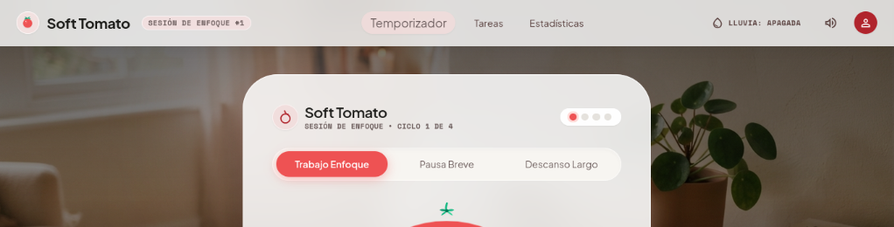
Versión 8.0: Gestión de Temas y Confirmación de Cancelación
IA: Stitch / GeminiVersión definitiva incorporando la limpieza del botón duplicado en Insights, el sistema interactivo de confirmación si hay un temporizador activo al cambiar de modo, y el selector desplegable de temas visuales para alternar entre distintas atmósferas relajantes.
"Necesito actualizar la aplicación web Pomodoro 'Soft Tomato' a su Versión 8.0 final resolviendo tres aspectos clave: 1. Limpieza en Estadísticas: Elimina el botón duplicado de descarga de resumen en la parte inferior del modal de 'Insights', dejando únicamente el botón superior principal 'Descargar Resumen' para evitar redundancias visuales. 2. Alerta de Confirmación de Interrupción: Implementa una verificación interactiva en JavaScript de modo que, si hay un temporizador activo (en marcha), al intentar cambiar de pestaña ('Trabajo Enfoque', 'Pausa Breve', 'Descanso Largo') o pulsar 'Reiniciar', el sistema solicite una confirmación previa ('¿Estás seguro de que deseas cambiar de modo? Se cancelará el progreso del temporizador actual'). 3. Selector de Temas Visuales (Theme Switcher): Añade un selector desplegable o de botones en la cabecera para cambiar dinámicamente el fondo de pantalla y el ambiente visual entre varias atmósferas relajantes: Sala (Default), Bosque Nocturno, Ciudad, Otoñal, Playa, Backroom. Conserva intactos todos los elementos previos (efectos de cristal, sonido de campana, audio ambiental de lluvia, gestor de tareas y exportación CSV)."
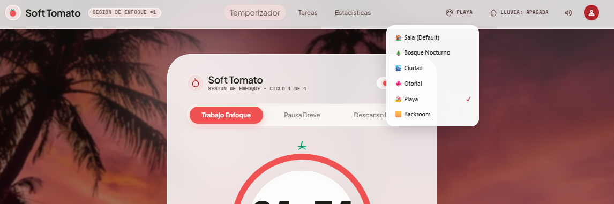
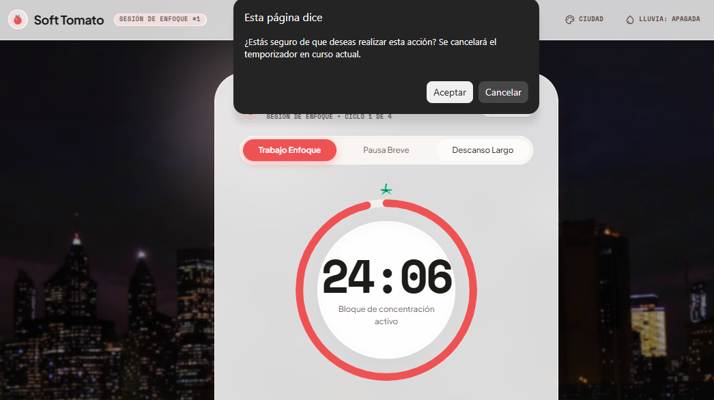
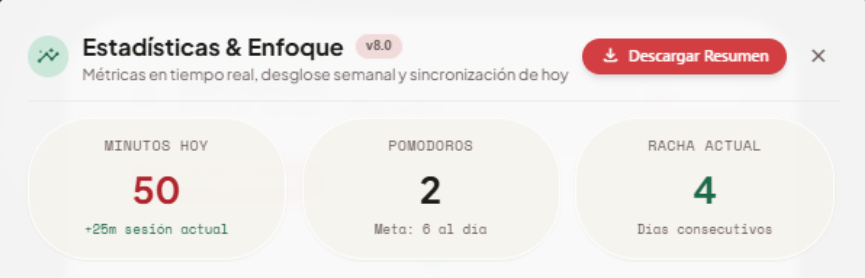
Versión 9.0: Configuración, Ciclos, Temas Completos y Responsive
IA: Claude (Anthropic)Panel de configuración (duraciones, ciclos, meta diaria y volumen), corrección de los ciclos de enfoque, temas con reloj, colores y sonido ambiental sintetizado propios, descarga junto a «Cerrar» en estadísticas, registro de distracciones (idea de la técnica Pomodoro original) y diseño adaptado a móvil sin scroll.
"Necesito actualizar la aplicación Pomodoro 'Soft Tomato' a su Versión 9.0 sin eliminar ningún diseño ni funcionalidad existente: me gusta mucho la página tal y como está. Quiero que añadas y corrijas lo siguiente: 1. Configuración: un botón que lleve a un apartado dentro de la misma página donde se pueda cambiar la duración de cada reloj (25, 15 y 5 min) y que se actualice correctamente. Añade también algo más útil en ese apartado. 2. Ciclos: en la última versión los ciclos (sesiones de enfoque) ya no funcionan: al acabar uno no se actualiza. Corrígelo. 3. Temas: que cada tema cambie más elementos de la página (reloj, sonido de fondo y colores), con identidad propia, sin descargar audios ni archivos nuevos y manteniendo un estilo relajante. Sala: igual que antes, pero con una hoguera de fondo en lugar de la lluvia. Bosque: reloj con forma de árbol (exterior, interior y números) y sonido de búhos y grillos. Ciudad: reloj digital y sonido de lluvia. Otoñal: reloj de árbol otoñal con ardillas y sonido de bosque (pájaros y animales). Playa: reloj playero con arena, agua y conchas, y sonido de mar y gaviotas. Backroom: reloj estilo Backrooms (Nivel 0 / Poolrooms) y sonido de agua fluyendo. El sonido ambiental se activa o desactiva desde la cabecera. 4. Estadísticas: el botón de descargar debe estar al lado del botón de cerrar. 5. Añade algo original que haga destacar el trabajo y que tenga relación con una app Pomodoro, no solo por añadir. 6. Hazla responsive: que se vea bien en móvil y no haga falta hacer scroll, con la misma calidad que antes."
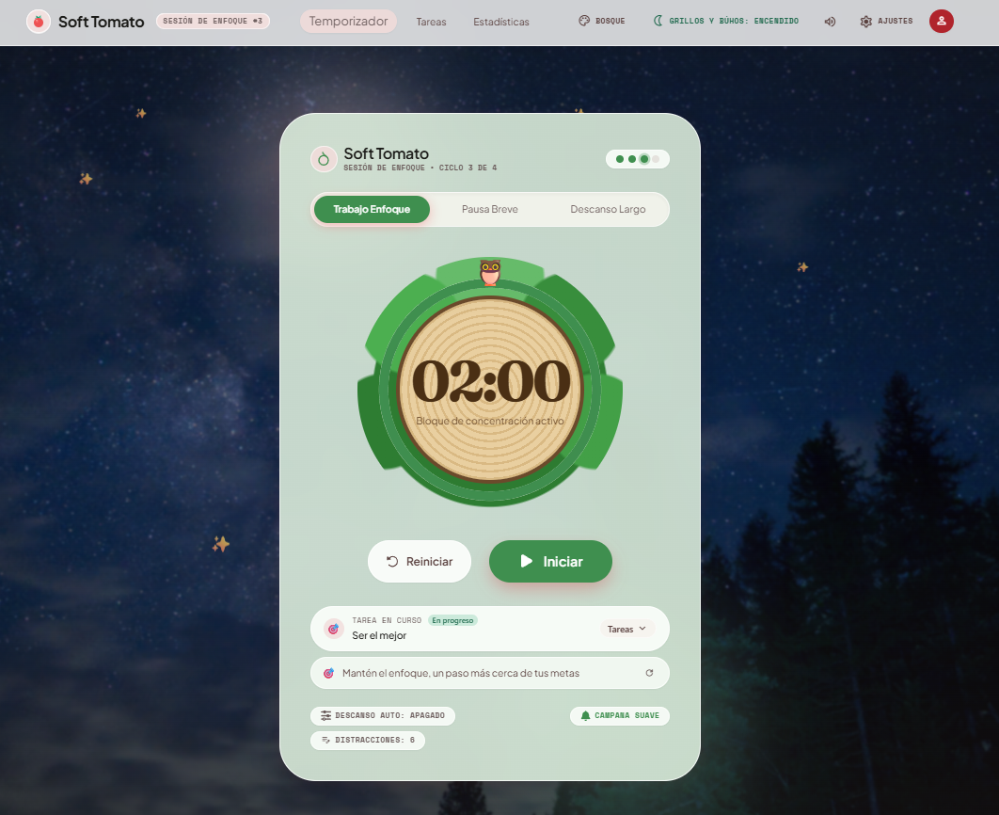
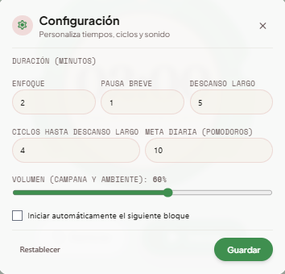
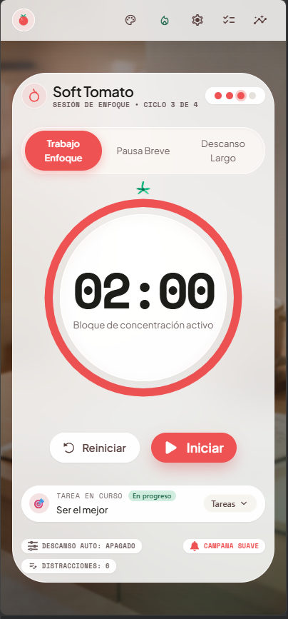
💡 Conclusión y Aprendizaje Personal
Hacer este proyecto me ha servido para ver que la IA te puede ahorrar muchísimo tiempo, pero solo si tienes claro qué es lo que quieres conseguir. El código casi nunca sale perfecto a la primera, y la clave ha sido ir poco a poco: primero el diseño, luego el temporizador y al final los extras como los sonidos.
Al final, me llevo una app que funciona bien y he aprendido a estructurar mejor los pasos a la hora de programar. Ver cómo la app iba cambiando con cada instrucción me ha ayudado un montón a entender el código de verdad en lugar de simplemente copiar y pegar.